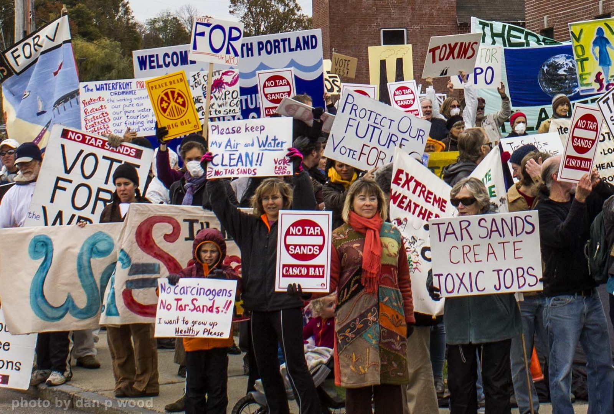
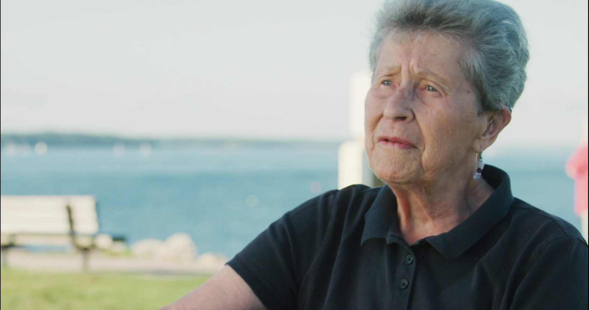

Individually, we are one drop. Together, we are an ocean.
—Ryunosuke Satoro
Our mission
To promote actions and practices that serve to protect the environment and the health and welfare of South Portland.
Who we are
We are a core group of coordinators and neighbors throughout the city. We evaluate issues and discuss strategies, and over one thousand community members share the work we do to fulfill our mission. The coordinators come from varied backgrounds: art, social work, community activism, naturopathic medicine, environmental work, teaching, nursing, psychology, religion, marketing, healing arts, and agriculture and conservation.

What we've done
- Mobilized community opposition to bringing dirty tar sands oil through our local pipeline to be exported through our port.
- Campaigned to pass the precedent-setting Clear Skies Ordinance which protects the community’s air quality by banning the loading of crude oil from piers in South Portland.
- Joined with the citizens group of Thornton Heights, a neighborhood of South Portland, when their lives and homes were threatened by the placement of a liquid natural gas terminal in the Rigby Rail Yard adjacent to their homes.
- Promoted safe environmental practices through our Bees, Bays and Backyards initiative, which resulted in the passage of a city ordinance banning the use of pesticides.
- Participated in the development of the City’s community education program regarding healthy lawn care practices without pesticides.
- Joined with Friends of Casco Bay to work together to keep synthetic fertilizers out of our bay.
- Joined efforts to educate and inform our fellow citizens about alternative energy possibilities, and partnered with a local energy business to offer solar panels, heat pumps and heat pump water heaters at a discount rate.
Our story
“Protect South Portland” was the rallying cry that sparked an official organization in response to threats posed by a plan to send Canadian tar sands to South Portland via pipeline. Now in its 13th year, PSP grew out of years of environmental activism on many fronts.
Protect South Portland (PSP) was formed in 2013 when Portland Pipeline, a subsidiary of Exxon and Suncor, tried to build a tar sands oil export terminal next to Bug Light Park on the pristine shores of Casco Bay. This would have necessitated building two 70-foot smokestacks to burn off the chemicals that had been added to the tar sands for transport through Portland Pipeline’s 75-year-old pipes. These combustion stacks would have emitted toxic fumes into our neighborhoods.
To stop this pollution we mobilized our community to work with our city council to establish our Clear Skies Ordinance in 2014. After 3 1/2 years in court, on August 24, 2018, we received the great news that the city had prevailed in its defense of our Clear Skies Ordinance. Judge Woodcock’s final ruling declares that the Clear Skies Ordinance does not violate the Interstate Commerce Clause of the U.S. Constitution.
Portland Pipeline appealed this decision to the First Circuit Court of Appeals in Boston. After eight years of litigation, Portland Pipeline withdrew its last appeal, leaving the Clear Skies Ordinance standing. Protect South Portland keeps mobilizing support for community protections first won with that ordinance.
Some back story: Portland Pipe Line Company, based in South Portland, had for years piped crude oil to Canada after offloading it from tankers in the harbor. In January of 2013, it became clear that the Portland Pipeline was planning to reverse the flow of its existing lines in order to bring tar sands to our City’s harbor to export.
At this unwelcome news, several of the state’s environmental groups, including Environment Maine, NRCM, and Toxics Action, sounded the alert and sprang into action. On a bitter cold January day, hundreds of concerned citizens marched in downtown Portland to express their opposition to PPL’s proposal. Though the plan was viewed as a threat to the whole region, South Portland was the only local entity with legal authority over activities on the waterfront. What to do?
In February, Emily Figdor of Environment Maine approached Elders for Future Generations, a group of senior activists at the Osher Lifelong Learning Institute at USM. She explained that the only way to move forward was to have a group of South Portlanders take the lead in the tar sands fight. Rachel Burger, a member from South Portland who had previously worked with the South Portland City Council on environmental issues, volunteered to lead the charge.
What we're doing now
Our focus is back on the tanks. PSP is coordinating the community response to the state’s new fence-line monitoring data; readings run high beside the tank farms, the same story the pre-fence-line data told. Come to the City Council workshop on Tuesday, Oct. 27 at 6 p.m., South Portland High School (637 Highland Ave.) and email the Council before it. See the tank farms map and data and Act now.
“Local Hero” Award
Protect South Portland was honored to accept one of six Local Hero Awards from the Conservation Law Foundation of New England in December 2019. This award is for all the people of South Portland and beyond who made the Clear Skies Ordinance a reality.

A short video about PSP’s Clear Skies work was screened before the award was accepted on behalf of the whole city. Watch the award video.